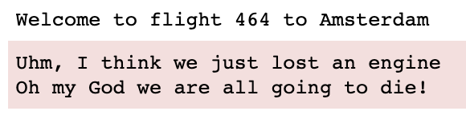
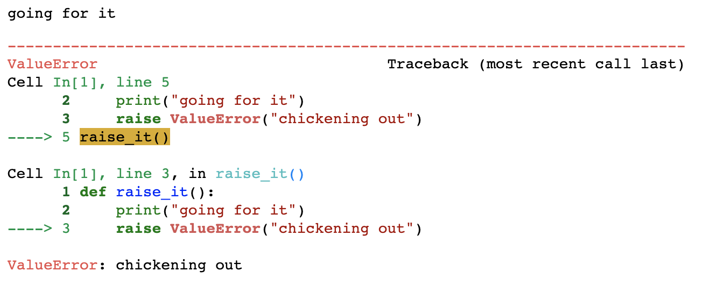

Introduction#
These exercises are meant for you to practice your skills. The sections are numbered according to the chapter numbering so you know where to look for exercises of a particular chapter.
You can deal with the exercises in several ways. The most convenient is to clone or download the entire repository, and work on the notebook on your own machine. You can also download only this notebook, but that will not include all solutions.
Hints and/or solutions are often included; they can be displayed where it says ”➥ Click to see the solution” or ”➥ Give me a hint”. Unfortunately, rendering of these hints is not flawless: they only get displayed correctly in a hosted notebook environment (not in a static viewer such as nbviewer or github).
Give it a try:
➥ Click to see solution!
first_name = "John"
surname = "Doe"
print(f'good morning, {first_name} {surname}!')
Of course, you should always really try to solve it yourself before going to the easy-peasy zone
Alternatively, solutions can be loaded from file by uncommenting and running the commented line of code that looks like this:
# Uncomment the following line to see the solution or code hint
# %load ./exercise_solutions/exercise_1_1.py
Give it a try in the cell below.
# Uncomment the following line to see the solution or code hint
#%load ./exercise_solutions/exercise_0_0.py
01 Getting started#
01.1 Operator precedence (1)#
In the code cell below, it was attempted to calculate the surface area of a circle. However, because of operator precedence the outcome is wrong! It should be 12.57. Can you correct this by using parentheses in the calculation? While you are at it, also add some spaces to make the code more readable.
import math
def circle_area(diameter):
return math.pi*1/2*diameter**2
circle_area(4)
25.132741228718345
➥ Click to see solution!
return math.pi * (1/2 * diameter)**2
01.2 Operator precedence (2)#
Correct the calculations below by making use of grouping parentheses.
10 - 7 // 2 * 3 + 1 = -2
45 % 10 / 2 = 0
27 * 2 + 46 ** 0.5 = 10
5 * 2 // 3 = 0
6 + 4 * 2 - 10 // 2 - 4 * 2 = -3
2 ** 3 ** 2 = 64
5 + 3 * 2 ** 2 = 32
➥ Give me a hint!
10 - 7 // 2 * (3 + 1)
is the solution for the first
➥ Give me the solution
10 - 7 // 2 * (3 + 1)
45 % (10 / 2)
(27 * 2 + 46) ** 0.5
5 * (2 // 3)
6 + (4 * 2 - 10) // 2 - 4 * 2
(2 ** 3) ** 2
(5 + 3) * 2 ** 2
01.3 Assignment shortcut operators#
The code cell below is not wrong, but it can be expressed more efficiently by using dedicated assignment operators. Can you improve by using these? Although flow control was not dealt with explicitly the code should be pretty obvious (this is one of the strengths of Python).
total = 1
fraction = 1
i = 1
for n in range(2, 6):
i = i + n
total = total + i
fraction = fraction / i
print(f'i is now {i}; the cumulative sum is {total} and the cumulative "fraction" is {fraction}')
i is now 3; the cumulative sum is 4 and the cumulative "fraction" is 0.3333333333333333
i is now 6; the cumulative sum is 10 and the cumulative "fraction" is 0.05555555555555555
i is now 10; the cumulative sum is 20 and the cumulative "fraction" is 0.005555555555555555
i is now 15; the cumulative sum is 35 and the cumulative "fraction" is 0.00037037037037037035
➥ Click to see solution!
i += n
total += i
fraction /= i
01.4: The Floor division and Modulo operators#
The floor division and modulo operators are handy tools if you want to work with currency, weight and distance units.
The modulo operator % gives the remainder of a division:
for n in range(1,6):
print(f'{n} modulo 3 is {n % 3}')
1 modulo 3 is 1
2 modulo 3 is 2
3 modulo 3 is 0
4 modulo 3 is 1
5 modulo 3 is 2
The floor division operator // gives the integer part of a division:
for n in range(1,6):
print(f'{n} floor divided by 3 is {n // 3}')
1 floor divided by 3 is 0
2 floor divided by 3 is 0
3 floor divided by 3 is 1
4 floor divided by 3 is 1
5 floor divided by 3 is 1
Now, suppose you want to create a tool converting from meters to imperial length units:
a yard is 0.9144 meters
a foot is 0.3048 meters
an inch is 2.54 centimeters
Using the above explained two operators, can you solve this problem? Use the correct assignment operator to store intermediate results.
meters = 234
yards = 0
feet = 0
inches = 0
# Your code
print(f'{meters} metric meters is equivalent to {yards} yards, {feet} feet and {inches} inches')
234 metric meters is equivalent to 0 yards, 0 feet and 0 inches
➥ Give me a hint!
yards = meters // yard
will calculate the yards from meters
➥ Give me another hint!
remainder = meters % yard
will calculate what is left after getting the yards.
➥ Give me the complete solution!
meters = 234
yards = 0
feet = 0
inches = 0
# Your code
yard = 0.9144
foot = 0.3048
inch = 2.54/100
yards = meters // yard
remainder = meters % yard
feet = remainder // foot
remainder %= foot
inches = remainder / inch # no need to floor here!
print(f'{meters} metric meters is equivalent to {yards} yards, {feet} feet and {inches} inches')
Challenge#
Can you already take this to the next level and put the solution in a function?
02 Data types#
02.1 String methods#
From the string below, use methods from str to capitalize the words and remove all whitespaces.
So, this string "The quick brown fox jumps over the lazy dog" should become "TheQuickBrownFoxJumpsOverTheLazyDog".
Have a look at the str help documentation to find out which functions you should use.
➥ Give me the solution
sentence = "The quick brown fox jumps over the lazy dog"
sentence = sentence.title()
sentence.replace(' ', '')
# or, in one chained statement:
#sentence.title().replace(' ', '')
sentence = "The quick brown fox jumps over the lazy dog"
02.2 String formatting#
Study this short string formatting tutorial and find out
how, given the variable
name = 'Bert', you can printHello, Bert, bye Bert'in four different ways using 4 different string formattng techniques
➥ Give me the solution
name = 'Bert'
print("Hello, {}, bye {}".format(name, name))
print("Hello, {name1}, bye {name2}".format(name1 = name, name2 = name))
print("Hello, {0}, bye {0}".format(name))
print(f"Hello, {name}, bye {name}")
how to center a variable within a fixed 100-character wide field of spaces
➥ Give me the solution
print("XX{:^100}XX".format(name))
how to center a variable within a fixed 100-character wide field, filled up with asterisks
➥ Give me the solution
print("XX{:*^100}XX".format(name))
how to print the variable
number = 3124855.667698with thousand separators and rounded at 2 decimals, right aligned in a field of 20 characters.
➥ Give me the solution
number = 3124855.667698
print("XX{:>20,.2f}XX".format(number))
name = 'Bert'
#YOUR CODE
02.3 String slicing#
Given this string:
letters = 'Een Aap Die Ijs Eet!'
write a slice that
a) prints 'Aap'
➥ Give me the solution
letters = 'Een Aap Die Ijs Eet!'
print(f'{letters[4:7]}')
b) prints 'EAD'
➥ Give me the solution
print(f'{letters[:9:4]}')
c) prints '!Eje Ae'
➥ Give me the solution
print(f'{letters[::-3]}')
d) prints ' !'
➥ Give me the solution
print(f'{letters[3::4]}')
letters = 'Een Aap Die Ijs Eet!'
#YOUR CODE
02.4 Working with lists#
Given the starting list below, implement the required series of single-statement steps to go to each consecutive modification.
#feeding an iterable to the list constructor will give a list of individual elements, in this case the letters
letters = list('ABCDEFGHIJK')
a) ['A', 'B', 'C', 'D', 'E', 'F', 'G', 'H', 'I', 'J', 'K', 'L', 'M']
➥ Give me the solution
letters += list('LM')
# or letters += ['L', 'M']
# or letters.extend(['L', 'M'])
b) ['A', 'B', 'C', 'H', 'I', 'J', 'K', 'L', 'M']
➥ Give me the solution
letters[3:7] = []
c) ['A', 'B', 'C', 'X', 'Y', 'Z', 'L', 'M']
➥ Give me the solution
letters[3:7] = list('XYZ')
d) ['A', 'B', 'C', 'X', 'Y', 'Z', 'L', 'M', 'A', 'B', 'C', 'X', 'Y', 'Z', 'L', 'M']
➥ Give me the solution
letters = letters * 2
# or letters *= 2
letters = list('ABCDEFGHIJK')
# YOUR CODE
02.5 Choosing between lists and tuples#
In essence, a tuple is a list that cannot be changed after it has been created. For the following use cases, choose the most appropriate of these two and implement the case.
a) Create a collection with the different roles that users of a web application can have: ‘GUEST’, ‘USER’, and ‘ADMIN’.
➥ Give me the solution
#a tuple because no other roles should be defined, or removed (accidentally).
roles = ('GUEST', 'USER', 'ADMIN')
b) A chess board has 64 fields, indicated by letters for the 8 columns (a-h) and numbers for the rows (1-8). So A1 is the lowerleft field and H8 the upper right one. A chess move consists of a piece (e.g. pawn, knight, queen etc) going from a field of origin (e.g. B2) to a field of destination (e.g. B4). Create a collection storing a moves in a chess game. Demonstrate its use by creating and storing a few moves.
➥ Give me the solution
#moves must be a list because the should be added during the game!
moves = list()
# tuple is best for a single move; it always has the same three elements.
move = ('pawn', 'e2', 'e4')
moves.append(move)
move = ('pawn', 'e7', 'e5')
moves.append(move)
move = ('pawn', 'f2', 'f4')
moves.append(move)
move = ('pawn', 'e5', 'f4')
moves.append(move)
move = ('bishop', 'f1', 'c4')
moves.append(move)
print(moves)
c) Create a collection representing the board of the game ‘tic tac toe’ (Dutch: boter kaas en eieren) in which each ‘cell’ can (1) be empty - a space ‘ ‘ (2) have a cross ‘X’ or (3) a circle ‘O’. Remember, collections can be nested!
➥ Give me the solution
# using module pprint to get a nice 2D printed representation
import pprint
pp = pprint.PrettyPrinter(width = 20)
# top level should be tuple, "rows" should be lists
tic_tac_toe = ([' ', 'X', 'O'],
['X', 'O', ' '],
['O', 'X', ' '])
pp.pprint(tic_tac_toe)
02.6 Tuples and lists#
Tuples are supposed to be immutable. Let’s explore the extend of this rule, and also some other behaviour of tuples and lists.
Given this tuple that is the top level collection of this datastructure:
ZP11 = ({'street': 'Zernikeplein',
'number': 11},
["Life Sciences", "Building", "ICT"],
('Wing A', 'Wing B', 'Wing C', 'Wing H'))
First think and deduce, then try and/or demonstrate these:
a) Add an element to ZP11; a single number (e.g. 1500)
➥ Give me the solution
This is not possible. If ZP11 were a list, this would have been the way:ZP11 += [1500]
b) Add an element, zipcode, to the address map (containing street and number)
➥ Give me the solution
ZP11[0]['zipcode'] = "9747AS"
c) Remove ‘ICT’ from the institutes
➥ Give me the solution
ZP11[1][2:3] = []
d) Add ‘Wing D’ to the wings of the building
➥ Give me the solution
Again this is not possible because it is a tuplee) Swap the list ["Life Sciences", "Building env", "ICT", "Engineering"] for ["Economics]
➥ Give me the solution
Again this is not possible because it is a tuple. This fails: ZP11[1] = ["Economics"]
but there is a workaround!
ZP11[1][:] = ["Economics"]
This works because you can swap the contents of the entire list!
ZP11 = ({'street': 'Zernikeplein',
'number': 11},
["Life Sciences", "Building env", "ICT", "Engineering"],
('Wing A', 'Wing B', 'Wing C', 'Wing H'))
# YOUR CODE
02.7 sets#
Create a set named “fruits_a” that has the values ‘apple’, ‘pear’ and ‘banana’. Create a second set, “fruits_b”, that holds the values ‘banana’, ‘guava’ and ‘orange’. Find the union, intersection and difference (both ways) between these sets.
➥ Give me a hint!
help(set)
Next, study the docs and find out
how to empty a set
what the difference is between
discard()andremove()how to find out whether one set is present within another set.
Demonstrate all these with code examples.
02.8 dict#
There are (at least) three ways to create and fill a dict. Use the suggested resources of chapter 1 to find them. Demonstrate these techniques to create a variable named inventory holding this dict:
{513: 'hammer', 322: 'screwdriver', 462: 'nailgun'}
➥ Give me a hint!
Use a literal with the format `inventory = {key1: value1, key2: value2}`.➥ Give me another hint!
Create an empty dict, `inventory = dict()` and add individual items like this `inventory[513] = 'hammer'`.➥ Give me the complete solution!
inventory = {513: 'hammer', 322: 'screwdriver', 462: 'nailgun'}
print(inventory)
inventory = dict()
inventory[513] = 'hammer'
inventory[322] = 'screwdriver'
inventory[462] = 'nailgun'
print(inventory)
inventory = dict([[513, 'hammer'], [322, 'screwdriver'], [462, 'nailgun']])
print(inventory)
This technique uses a list of 2-element-lists passed as argument to the dict() function..
03. Flow control#
03.1 if/else (1)#
Using the input() function, ask the user their full name. Check the number of separate names. For instance, my full name is Michiel Andries Noback (don’t tell anybody)! So the count is 3. If the count is higher than 3, ask the user whether they are catholic. If the answer is “no”, you must conclude they are royalty. If the count is 2 or 3, conclude they are a commoner. With a count of 1, they must be a popstar!
➥ Give me a hint!
name = input('Please give your full name: ')
if len(name.split(" ")) > 3:
pass
03.2 if/else (2)#
Using the input() function, ask the user whether they like fish. Convert the input to lowercase so “Yes”, “yes” and “YES” are all correct. Check the resulting answer (it should be yes or no, nothing else).
Next, ask the user whether they like meat. With these two inputs, give a pizza suggestion (e.g. vegetariana for people who said “no” to both questions). Look up a pizza menu from your favourite restaurant.
Feel free to adjust or expand to your liking!
➥ Give me a hint!
correct_answers = {'yes', 'no'}
fish = input('do you like fish on your pizza [y/n]?')
if not fish.lower() in correct_answers: #or if fish.lower() != ‘yes’ or fish.lower() != ‘no’:
fish = input(‘Only “yes” or “no” allowed! Do you like fish on your pizza [y/n]?’)
03.3 looping with for (1)#
From this list, [3, 6, 8, 2, 7, 5, 1, 4], create a list holding tuples of each consecutive pair of numbers, like this: [(3, 6), (8, 2), (7, 5), (1, 4)]
➥ Give me the solution
Many solutions possible; here are a few.result = list()
for i in range(0, len(l), 2):
result.append((l[i], l[i+1]))
result
or
l = [3, 6, 8, 2, 7, 5, 1, 4]
result = list()
for i in range(len(l)):
if i % 2 == 0:
result.append((l[i], l[i+1]))
result
or
result = list()
index = 0 # enumerate() is better but not dealt with
for n in l:
if index % 2 == 0:
result.append((l[index], l[index+1]))
index += 1
result
l = [3, 6, 8, 2, 7, 5, 1, 4]
# YOUR CODE
03.4 looping with for (2)#
Given the text presented below, report
the number of sentences
the number of words in each sentence
the words that are repeated at least once
the count of each letter (challenge: only alphabet characters) There are several looping scenarios to address both word count and letter count: nested or after each other.
➥ Give me a hint!
Besides somesplit()ting and looping, this assignment requires the use of sets and/or dictionaries.
➥ Give me another hint!
letters = dict()
sentences = text.split(".")
for sentence_count, sentence in enumerate(sentences):
pass
➥ How do I count frequencies?
letter_freq = dict()
for char in text:
letter_freq.setdefault(char, 0)
# better than
#if char not in letter_freq:
# letter_freq[char] = 0
letter_freq[char] += 1
from collections import Counter
Counter(text)
text = """Python is a high-level, general-purpose programming language.
Its design philosophy emphasizes code readability with the use of significant indentation.
Python is dynamically-typed and garbage-collected.
It supports multiple programming paradigms, including structured (particularly procedural),
object-oriented and functional programming."""
# YOUR CODE
04 Functions#
04.1 Refactor to use functions#
Refactor the above assignment (03.3) to use functions for each sub-assignment. You will end up with at least 4 functions, something like this:
count_sentences(text): counts the number of sentencescount_words(sentence): counts the words in a sentenceprocess_words(sentence, word_dict): Counts the different words in a sentence. Ifword_dictisNone, create a new one, else use the given dict!get_letter_frequency(sentence, letter_dict): Determines the letter frequencies in the sentence. Ifletter_dictisNone, create a new one, else use the given dict!
You can ignore the fact that this may not be the most efficient way to get all statistics in a single analysis. Feel free to be creative in your refactoring.
05 Reading and Writing files#
05.1 Patient before & after treatment data#
In the data folder of this repo there is a file named patients_before_after.csv. If this assignment is viewed within a browser window wou can click on the link to access it.
Write a function named process_patient_data() that
Reads in the data
Calculates the difference between “Before” and “After”
Writes the result to a file named
patient_data_processed.csvwith this format:
Patient,Difference
1,23
2,40
3,57
...
Hint: writing a new line to file is done with "\n".
➥ Give me the solution!
input_file = "./data/patients_before_after.csv"
output_file = "./data/patients_diff.csv"
in_handle = open(input_file, "r")
out_handle = open(output_file, "w")
out_handle.write("Patient,Difference\n")
#without enumerate()
count = 0
for line in in_handle:
count += 1
if (count == 1): continue
line = line.strip()
#automatic unpacking
(patient, before, after) = line.split(",")
before = int(before)
after = int(after)
diff = before - after
out_handle.write(f'{patient},{diff}\n')
print(patient, before, after, diff)
in_handle.close()
out_handle.close()
# YOUR CODE
05.2 Drug trial data#
In the data folder of this repo there is a file named placebo_drug_test.csv. If this assignment is viewed within a browser window wou can click on the link to access it.
Write a function named analyse_drug_data() that reads in the file and returns - as a dict data structure - the following information:
The number of subjects in the data
The mean, minimum and maximum of the Placebo treatment
The mean, minimum and maximum of the Valproate treatment
# YOUR CODE
06 Core library functions#
06.1 enumerate#
Look at the solution for exercise 05.1 and refactor it so that the enumerate function is used instead of this construct:
count = 0
for line in in_handle:
count += 1
#more code
06.2 chr()#
Below is a secret message encoded in numbers. Each number represents a letter.
Can you crack it with the chr() function?
Note, you will also need to use int()
➥ Give me the solution
encrypted = '73|32|104|111|112|101|32|71|111|111|103|108|101|32|105|115|32|109|111|114|101|32|99|97|114|101|102|117|108|108|32|119|105|116|104|32|109|121|32|100|97|116|97|33'
decrypted = ""
for c in encrypted.split("|"):
decrypted += chr(int(c))
decrypted
# The encoded message:
encrypted = '73|32|104|111|112|101|32|71|111|111|103|108|101|32|105|115|32|109|111|114|101|32|99|97|114|101|102|117|108|108|32|119|105|116|104|32|109|121|32|100|97|116|97|33'
06.3 ord()#
Do the reverse of the above exercise: create an encrypted message from the given text.
Write a function for this task that accepts as arguments the message to encryp and the separator to use. The separator should default to '|'. Note, you will also need to use str().
➥ Give me the solution
def encrypt(message, separator = '|'):
result = list()
for c in message:
result.append(str(ord(c)))
#the join method is more efficient than "text += text" concatenation
return separator.join(result)
message = "Keep it secret, keep is safe!"
print(encrypt(message))
message = "Keep it secret, keep is safe!"
# YOUR CODE
06.4 Sorting#
Given the list of tuples below, holding first names, last names, ages, lengths and weights of persons, sort it according to
a) First name
➥ Give me the solution
# default behaviour is already correct!
sorted(persons)
b) Age (from high to low)
➥ Give me the solution
sorted(persons, key = lambda person: person[2], reverse=True)
c) Last name and first name
➥ Give me the solution
# create a key of two person elements: last and then first name
sorted(persons, key = lambda person: (person[1], person[0]))
d) The person’s BMI
➥ Give me the solution
# publish a key representing a filed that is not actually present
sorted(persons, key = lambda person: person[4]/(person[3]**2) )
persons = [('John', 'Doe', 57, 180, 80),
('Anna', 'Doe', 62, 190, 97),
('Allie', 'Zandt', 42, 176, 78),
('Roger', 'Marre', 35, 181, 72),
("Z'duru", 'Ambarda', 39, 166, 70)]
# YOUR CODE
06.5 The sys module#
Using the correct output streams, print messages to get output that looks like this: 
➥ Give me the solution
import sys
print("Welcome to flight 464 to Amsterdam")
print("Uhm, I think we just lost an engine", file=sys.stderr)
print("Oh my God we are all going to die!", file=sys.stderr)
# YOUR CODE
06.7 The csv module#
Repeat exercise 05.2 but this time use the csv module.
07 Comprehensions#
07.1 Starting simple#
Using comprehensions and the range(8) function call as basic iterator, generate the following lists:
a) [2, 2, 2, 2, 2, 2, 2, 2]
➥ Give me the solution
[2 for x in range(8)]
b) [0, 1, 4, 9, 16, 25, 36, 49]
➥ Give me the solution
[x**2 for x in range(8)]
c) [0, 1, 2, 3, 4]
➥ Give me the solution
[x for x in range(8) if x < 5]
d) [1, 3, 5, 7]
➥ Give me the solution
[x for x in range(10) if x % 2 == 1]
e) [10, 12, 14, 16]
➥ Give me the solution
[x+10 for x in range(8) if x%2==0]
#YOUR CODE
07.2 Some more basic listcomps#
a) Go from this [1, 3, "H", 4, "K"] to this [1, 9, "hh", 16, "kk"]
➥ Give me the solution
my_data = [1, 3, "H", 4, "K"]
[e.lower()*2 if type(e) == str else e**2 for e in my_data]
my_data = [1, 3, "H", 4, "K"]
# YOUR CODE
b) Go from this xy_coords = [(3, 4), (1, 5), (6, 4), (5, 1)] to this [1, 4, 2]; i.e. calculate the absolute difference between x and y of each coordinate.
➥ Give me the solution
[abs(x - y) for x, y in xy_coords if x > 1 and y > 1]
# or, alternatively
[abs(t[0] - t[1]) for t in xy_coords if t[0] > 1 and t[1] > 1]
xy_coords = [(3, 4), (1, 5), (6, 4), (5, 1)]
# YOUR CODE
07.3 Some more juice in comprehensions#
These exercises should all be solved using comprehensions.
a) from this list, [3, 1, 6, 5, 2] create the list [[0, 1, 2], [0], [0, 1, 2, 3, 4, 5], [0, 1, 2, 3, 4], [0, 1]]
➥ Give me the solution
l = [3, 1, 6, 5, 2]
[[x for x in range(n)] for n in l]
b) from this list, [3, 1, 6, 5, 2] create the list [[2, 1, 0], [0], [5, 4, 3, 2, 1, 0], [4, 3, 2, 1, 0], [1, 0]]
➥ Give me the solution
l = [3, 1, 6, 5, 2]
[[x for x in reversed(range(n))] for n in l]
c) from this list, [3, 1, 6, 5, 2] create the dict {3: 3, 1: 0, 6: 15, 5: 10, 2: 1}. This is the sum of 0 (or 1) to the corresponding number.
➥ Give me the solution
l = [3, 1, 6, 5, 2]
{n:[x for x in reversed(range(n))] for n in l}
l = [3, 1, 6, 5, 2]
# YOUR CODE
08 The exeption mechanism#
08.1 From output to implementation#
Given the output below, which is the result from running a cell, implement the code that will generate exactly this output. 
08.2 add error handling#
In the data folder you will find a file, dirty_data.csv. This serves as input to the Python script add_error_handling.py that is present in the scripts folder. This is the script:
def read_file(file):
'''Reads in the given data and returns a list of tuples,
where each tuple contains exactly 3 numbers'''
result = list()
with open(file) as f:
for line in f:
print(f)
return result
def process_numbers(numbers):
'''Receives a list of tuples of 3 numbers each.
Then calculates the first number divided by the second number,
and this times third number for each tuple.
Returns a List of results.'''
for t in numbers:
pass
def main(args):
'''Receives the command-line argument with file and
processes this with the two functions.
Then reports the average of all processed cases.'''
numbers = read_file(args[1])
processed = process_numbers(numbers)
if __name__ == "__main__":
'''main entry point'''
import sys
main(sys.argv)
It is your task to add all types of error handling that will make this a robust piece of functionality. This involves catching and dealing with exceptions/errors, but also verifying user input and dealing with erroneous input in a correct and friendly manner.
10 Object-oriented Programming#
10.1 A Zoo class#
a). Study the docs of defaultdict from module collections here. You should use this container in this exercise. Create a Zoo class that can be used to hold a collection of zoo animals. Initialize it with a defaultdict to hold animals that will be retrievable by species name.
➥ Give me the solution
from collections import defaultdict
class Zoo:
def __init__(self):
self.animals = defaultdict()
# YOUR CODE
b). Implement a method within class Zoo that can be used to add animals with a species name and animal name. It should have this signature:
def add_animal(self, species, name):
To demonstrate correctness, implement a method that can be used to fetch all names of animals of a given species, defaulting to an empty list if no such animal species is in the Zoo:
def get_animals(self, species):
Demonstrate: Create and fill the Zoo with some animals and fetch some existing and non-existing animals.
➥ Give me the solution
from collections import defaultdict
class Zoo:
def __init__(self):
self.animals = defaultdict()
def add_animal(self, species, name):
self.animals.setdefault(species, []).append(name)
def get_animals(self, species):
return self.animals.get(species, [])
z = Zoo()
z.add_animal("bear", "Jonas")
z.add_animal("bear", "Boris")
z.add_animal("parrot", "Tweety")
print(z.get_animals("bear"))
print(z.get_animals("lion"))
# YOUR CODE
c). Implement a string representation function (using the correct hook) that will display the following information when an instance of the class is printed:
Zoo {bear: Jonas & Boris; lemming: Peter & Roger & Anne; parrot: Tweety}
Note the animals are sorted by species name and animal name!
➥ Give me a hint
The function to be implemented is __str__().
Use "str".join(list) to combine elements.
➥ Give me the solution
from collections import defaultdict
class Zoo:
## rest of code omitted!
def __str__(self):
str_repr = []
for a in sorted(self.animals.keys()):
sp = a + ": " + " & ".join(self.animals.get(a))
str_repr.append(sp)
return "Zoo {" + "; ".join(str_repr) + "}"
# YOUR CODE
d). Make the Zoo class iterable. When used in a for loop or other iteration context, instances should sequentially serve animals as a tuple. in this tuple, the first element should be a species name and the second the animal name. Extra credits to do this with comprehensions.
➥ Give me a hint
You should use the __iter__() hook to serve a new data representation of the Zoo animals.
This needs a nested looping to create the requested datastructure - or a nested comprehension.
➥ Give me the solution
from collections import defaultdict
class Zoo:
def __init__(self):
self.animals = defaultdict()
def add_animal(self, species, name):
self.animals.setdefault(species, []).append(name)
def get_animals(self, species):
return self.animals.get(species, [])
def __str__(self):
str_repr = []
for a in sorted(self.animals.keys()):
sp = a + ": " + " & ".join(self.animals.get(a))
str_repr.append(sp)
return "Zoo {" + "; ".join(str_repr) + "}"
def __iter__(self):
## best but hard to read
iterator = [(species, animal) for species in self.animals for animal in self.animals[species]]
## more code but easy to read
#iterator = list()
#for species in self.animals:
# for animal in self.animals[species]:
# iterator.append((species, animal))
#
## delegate!
return iterator.__iter__()
zoo = Zoo()
zoo.add_animal("lemming", "Peter")
zoo.add_animal("lemming", "Roger")
zoo.add_animal("lemming", "Anne")
zoo.add_animal("bear", "Jonas")
zoo.add_animal("bear", "Boris")
zoo.add_animal("parrot", "Tweety")
for a in zoo:
print(a)
# YOUR CODE
11. Programming challenges#
All these challenges require you to use several to many of the learned concepts of this course. They are star-coded to indicate the difficulty level, ranging from one ✲ to five ✲✲✲✲✲. Some challenges start out with one star, but represent more stars when finished completely.
You are encouraged to create real programs in dedicated scripts, with a main() method that is called from within this construct:
if __name__ == "__main__":
#Start application here
Write functions that are small, well-documented, and serve only a single well-defined purpose. To become a real-world programmer you could also start making use of the argparse module to process command-line arguments.
11.1 A number guessing game (✲)#
Write an application that asks the user to think of a number, and try to guess this number as efficiently as possible.
For instance, program output could be:
Please think of a number between 0 and 10. Press enter when you are ready.
Is the number above 3? [enter y for yes and n for no]
n
Is the number above 1? [enter y for yes and n for no]
y
Is the number 2?
n
The number must be 3!
Think before you start! What would be the most efficient “algorithm” to find the number?
11.2 Finding palindromes (✲ to ✲✲✲✲)#
A palindrome is a word, phrase, or sequence that reads the same backwards as forwards, e.g. “madam” or “nurses run”. In biological sequence analysis palindromes are often important protein-binding DNA elements. They are sometimes literal palindromes, as in “GGATTAGG”, or complementary palindromes, where the same sequence is present in the reverse complement strand of the double helix, as in GGAATTCC:
5'-GGAATTCC-3'
3'-CCTTAAGG-5'
Start by writing a single function that determines whether a given input string is a palindrome.
Next, write a function that looks for a palindrome with a minimal length within a given input string, where the rest of the string is not important. Apply this to
Extend this to processing a word list passed through the command-line. There are two such lists to be found in the
datafolder of this repo:dutch_words.txtandenglish_words.txtApply yourself to molecular biology: create a program that looks for palindromes in a given DNA sequence. The sequence below contains at least 2 palindromes of differing lengths. Challenges could be: Find all 6-nucleotide palindromes, or What is the longest palindrome in the human genome?
5'-AGAGGATCCCTCCCATATATGCGGCGATCGCCGCATATCC-3'
11.3 Hangman word guessing game (✲✲)#
Hangman is a word-quessing game where one party (in this case the computerprogram you will write) chooses a word that the other party needs to guess. The number of letters in the word is indicated with dashes or underscores.
The guessing party takes turns guessing wich letter will be in the word. If the guessed letter is in the word the dashes are replaced at the correct position(s) with the letter. If the guessed letter is not in the word, a gallow is build piece by piece (one piece for each absent letter). In total, the gallow consists of nine parts, including the hanged. You can choose to visualize progress using another picture of course. The easiest way is using “ASCII art”, as in this example:
HANGMAN = [
'''
+---+
| |
O |
/|\ |
/ \ |
|
=========''']
11.4 Encrypt and decrypt messages using Caesar cipher (✲✲ to ✲✲✲)#
Caesar’s cipher is one of the simplest and most widely known encryption techniques. Each letter in a text is replaced by a letter some fixed number of positions down (or iup) the alphabet. For example, with a left shift of 3, D would be replaced by A, E would become B, and so on. The method is named after Julius Caesar, who used it in his private correspondence (see Wikipedia).
It is your task to create such a cipher, where the program takes two command-line arguments. The first one is the shift (left being negative) and the second a filename or a literal text.
Using the argparse module is a good idea, but not required.
11.5 Create a data dashboard (✲✲ to ✲✲✲✲)#
Create an app that receives a file with structured data (columns) as input. The app then reads this file in a streaming manner and reports statistics of the file contents. The first three of these are mandatory, the subsequent features are optional and increase the level of this challenge.
Dimensions of the dataset (rows/comuns)
Type of data in the columns
Descriptive statistics of each column;
if numeric: a five-number summary plus the mean
if character: the number of unique values and a listing of frequencies of these if the number of unique values is below 10
A pairwise correlation matrix of the numeric columns (if less than 6 or so). For this you will need to use something like numpy, see here
Embed this in a GUI; there are several libraries for that purpose available in Python but I suggest you use TkInter, PyQt5 or PySimpleGUI - see here.
Be creative; and impress yourself and your teacher.
11.6 Implement k-Means clustering (✲✲✲✲)#
The k-Means clustering algorithm is used much in data science to group data in an unsupervised manner. See Wikipedia for details.
For this assignment you should implement this algorithm in a program that takes two command-line arguments. The first is a file with the input data and the second should be an optional argument for the k-parameter which defaults to 3.
The output should be a file holding a copy of the input data, but with an extra column appended indicating the cluster number in which the example is put. For instance, given this input, a random sample from the famous “Fisher’s iris” dataset:
Sepal.Length Sepal.Width Petal.Length Petal.Width Species
6.2 3.4 5.4 2.3 virginica
6.7 3.1 4.7 1.5 versicolor
5.8 2.7 5.1 1.9 virginica
4.8 3.0 1.4 0.1 setosa
4.8 3.4 1.9 0.2 setosa
6.5 3.0 5.8 2.2 virginica
5.6 3.0 4.5 1.5 versicolor
4.9 3.1 1.5 0.1 setosa
could be clustered (using only the numerical columns!) as follows:
Sepal.Length Sepal.Width Petal.Length Petal.Width Species cluster
6.2 3.4 5.4 2.3 virginica 1
6.7 3.1 4.7 1.5 versicolor 2
5.8 2.7 5.1 1.9 virginica 1
4.8 3.0 1.4 0.1 setosa 3
4.8 3.4 1.9 0.2 setosa 3
6.5 3.0 5.8 2.2 virginica 2
5.6 3.0 4.5 1.5 versicolor 2
4.9 3.1 1.5 0.1 setosa 3
With only one mismatch between the Species and cluster columns.
11.7 Implement neighbor joining clustering(✲✲✲✲)#
See Wikipedia for details. You could employ several strategies. The first is classical joining where you end up with a structure with all nodes connected. You can also force the algorithm to stop when a set number of clusters has been formed. This makes it comparable to k-Means but without the random seeding (thus deterministic).
11.8 Create a Game of Life simulation app (✲✲✲✲✲)#
The Game of Life or Conway’s Game of Life is a simulation of a simple growth experiment. It follows a few simple rules deciding whether a cell (an element in a 2D grid) will live or die. The challenge here is to visualize the simulation so you will need to work with a Graphical User Interface (GUI) toolkit. There are several libraries for that purpose available in Python but I suggest you use TkInter, PyQt5 or PySimpleGUI - see here.